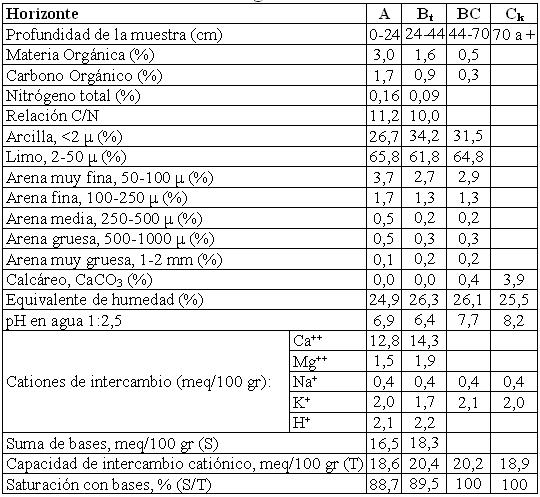

Argiustol típico, franca fina, mixta, térmica
Capacidad de uso: IIIc
Es un suelo bien drenado desarrollado sobre sedimentos eólicos puros en ambientes de lomas muy suavemente onduladas o muy extendidas en el departamento Río Primero. Es el mejor representante individual de los buenos suelos de la región en estudio, extendiéndose hacia el Este. Posee buena retención de humedad, se trabaja con facilidad siendo la única limitante con carácter moderado la climática por las altas temperaturas estivales principalmente. Presenta un horizonte superficial A de 24 cm de profundidad de color pardo grisáceo muy oscuro, estructura en bloques, textura franco limosa franco limosa, estructura en bloques con 26% de arcilla. Continúa hacia abajo hasta 44 cm un horizonte enriquecido en arcillas iluviales (34%) de textura franco arcillo limosa, con barnices comunes a abundantes de arcilla y humus en las caras de los agregados. Continúa hacia abajo una transición (B/C) estando el material parental a profundidad de 70 cm, franco limoso, masivo con moderada reacción al ClH en la masa del suelo.
Descripción del perfil típico:
Un perfil representativo de esta serie fue descripto a 4 km al NNE del paraje homónimo, departamento Río Primero, provincia de Córdoba.
A 0-24 cm; color en húmedo pardo grisáceo muy oscuro (10YR3/2), franco limoso, estructura en bloques subangulares medios moderados, friable en húmedo, ligeramente plástico, no adhesivo, pH 6,9, raíces abundantes, límite inferior claro suave.
Bt 24-44 cm; color en húmedo pardo oscuro (10YR3/3), franco arcillo limoso, estructura en prismas irregulares medios moderados, friable en húmedo, plástico, adhesivo, pH 6,4, barnices de arcilla y humus comunes, raíces comunes, límite inferior claro y suave.
BC 44-70 cm; color en húmedo pardo a pardo oscuro (7,5YR4/4), franco arcillo limoso a franco limoso, estructura en bloques y prismas débiles, friable en húmedo, ligeramente plástico, no adhesivo, pH 7,7, barnices escasos de arcilla, raíces escasas, límite inferior abrupto ondulado.
Ck 70 cm a más; color en húmedo pardo oscuro (7,5YR5/4), franco limoso, masivo, muy friable en húmedo, no plástico, no adhesivo, pH 8,2, moderada reacción al CLH en la masa del suelo.
Cuadro Nº12
Datos analíticos Serie EL ALCALDE
Situación: Latitud: 31º07’S Longitud: 63º36’O Altitud: 210 m.s.n.m.

|